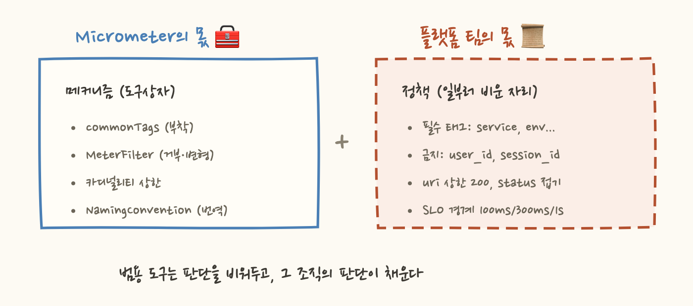

2011년, 수공예품 마켓 Etsy의 엔지니어들에겐 고민이 있었어요. "코드 어디서든 아무 숫자나 부담 없이 재고 싶다. 배포 수, 가입 수, 결제 시간... 그런데 측정 코드가 앱을 느리게 하면 아무도 안 심을 거다." 그들이 내놓은 답이 몇백 줄짜리 Node.js 데몬이었고, 이름은 StatsD였습니다. 이 작은 물건이 이후 10년의 계측 문화를 바꿔놨어요.
StatsD의 핵심 결정은 하나예요. 앱은 UDP로 텍스트 한 줄을 보내고, 응답을 기다리지 않는다(fire-and-forget).
왜 하필 UDP였을까요? TCP는 연결을 맺고, 전달을 확인하고, 실패하면 재시도해요. 신뢰성의 대가로 기다림이 생기죠. UDP는 반대입니다. 보내고 나면 끝이에요. 패킷이 유실돼도 앱은 모르고, 알 필요도 없어요. 계측 하나를 잃는 것과 앱이 느려지는 것 중 무엇이 더 나쁠까요? Etsy의 답은 명확했어요. 모니터링은 절대 서비스를 해치면 안 된다. 통계는 어차피 대량이라 몇 개 유실돼도 경향은 그대로니까요.
덕분에 계측 비용이 사실상 0이 됐고, 개발자들이 부담 없이 아무 데나 측정을 심는 문화가 생겼어요. "일단 재라, 나중에 쓸모를 찾아라"는 태도입니다. 관측성 문화의 씨앗이 여기서 뿌려진 거예요.
포맷은 외울 것도 없어요. 이름:값|타입 끝:
미터 타입 네 개(c, ms, g, s)가 Micrometer 시리즈에서 본 카운터·타이머·게이지의 조상이에요. 앱 쪽 클라이언트 라이브러리는 사실상 문자열 포매터 + UDP 소켓이 전부라서 어떤 언어로든 10분이면 만들 수 있었고, 이 진입장벽 제로가 폭발적 전파의 비결이었어요.

원조 StatsD에는 결정적 결핍이 있었어요. 태그가 없어요. 그래서 차원을 표현하려면 이름에 계층을 넣어야 했죠. prod.seoul.api.latency, prod.busan.api.latency처럼요. 이름이 폭발하고, "리전 상관없이 전체 latency"를 보려면 복잡한 와일드카드 패턴이 필요했어요.
데이터독이 이걸 확장한 게 DogStatsD예요. 프로토콜 끝에 태그를 붙였죠:
계층형 이름에서 차원(dimensional) 메트릭으로의 진화이고, 오늘날 "이름 + 태그 조합 = 시계열"이라는 모델(카디널리티 이야기의 그 모델!)이 대중화된 경로예요. DogStatsD는 데이터독 Agent에 내장돼 있어서, 지금도 앱이 로컬 Agent로 커스텀 메트릭을 보내는 표준 통로로 쓰입니다. Micrometer의 StatsdMeterRegistry가 바로 이 통로를 사용하고요.
StatsD 자체를 새로 도입할 일은 이제 드물어요. 하지만 그 설계 원칙들은 현대 도구 전부에 스며들어 있어요.
"보내는 쪽 부담을 0으로"입니다. Micrometer registry가 요청마다 전송하지 않고 메모리 집계 후 배치 발행하는 것, eBPF가 hot path에서 몇 바이트만 기록하고 무거운 일을 별도 데몬에 넘기는 것이 전부 같은 정신이에요. "로컬에서 집계하고 나서 보내라"도 그렇습니다. StatsD 데몬의 10초 flush가 오늘날 push registry의 step 발행으로 이어졌고요. "프로토콜은 사람이 읽을 수 있게"도 마찬가지예요. 프로메테우스의 텍스트 포맷도 이 계보의 후손입니다.
기술은 은퇴해도 설계 결정은 상속됩니다. StatsD가 그 교과서적 사례예요.